| 日付 | 2009年4月10日（金） - 2009年4月11日（土） | ||||
|---|---|---|---|---|---|
| 山域 | 駿河 | ||||
| メンバー | 単独 | ||||
| 山行形態 | 1泊2日テント泊 | ||||
| アクセス | 電車、バス | ||||
| ルート (Map) |
|
静岡県と山梨県の境に安倍奥東山稜という稜線がある。
高ドッキョウから遠くこの稜線を眺めたときから、
素朴でのどかなイメージのあるこの道をずっと歩きたいと思っていた。
この金曜日で青春18切符の期限が切れるからという理由で休暇を取り、
金土の2日間でこの稜線を縦走することにする。
1日目
静岡駅からバスに乗って、遠路梅ヶ島温泉をめざす。
車窓からは新緑に染まった山肌が見える。
桜かツツジか、所々にピンク色が混じって非常にきれいだ。
バスで2時間近くかかるが、車窓からの風景を見ていると飽きることは無い。
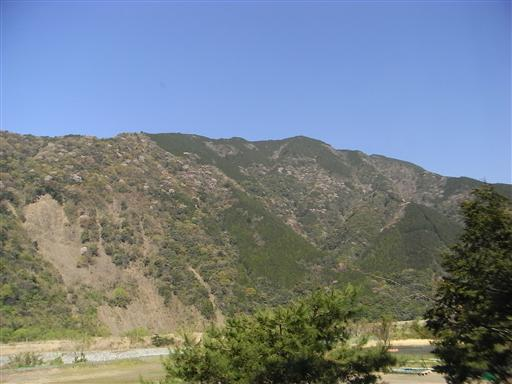
10:08 梅ヶ島温泉バス停到着。標高860m。
山伏に登ったとき以来、1年ぶりの梅ヶ島温泉だ。
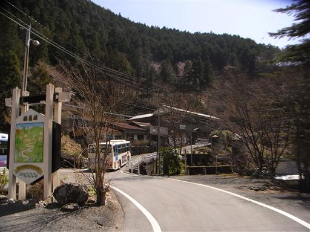
最初は山伏に登ったときと同じ道を通る。
山伏に登ったときは初めての避難小屋泊装備で重い荷物に苦しんだ記憶がある。
今回は久しぶりのテント泊山行。やはり荷物が相当重く感じる。
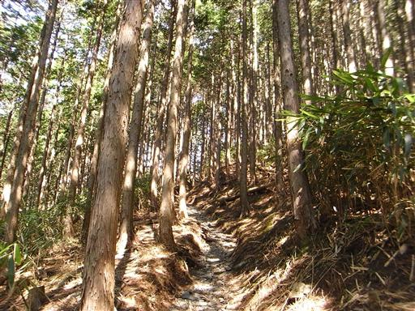
車道との合流点に到着。ここから登山道に入っていけば八紘嶺から山伏に至る。
1年前に見た幹に穴の開いた木も元気に立っていた。
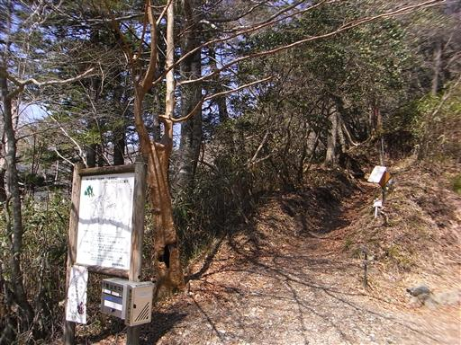
登山道と分かれてしばらくは車道を歩いていく。
時々バイクが通るのがうっとうしい。
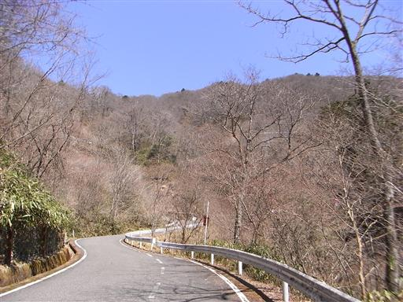
安倍峠旧歩道入口に到着。なぜ「旧」なのかはよく分からない。
ここで車道と分かれる。
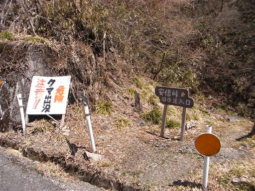
安倍峠に通じる道は、周囲に雑木林が広がっており、
真中には小川が流れていて、素晴らしいの一語に尽きる。
冬枯れの景色でもこれだけきれいなのだから、新緑や紅葉の季節は格別だろう。
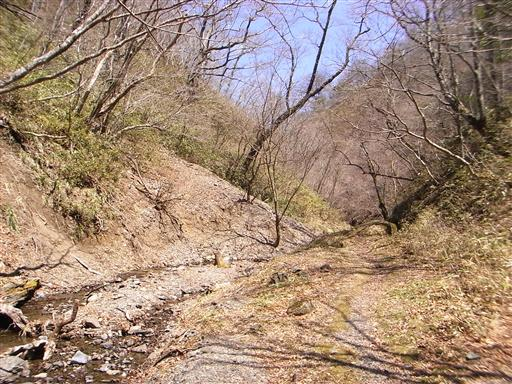
周囲の木には、名前を示した板が掛けられている。
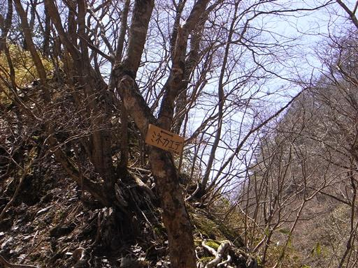
安倍川の水源地に到着。ここが安倍川の始まりのようだ。
少し下流の水のあるところで水を汲む。
ここから先、ずっと水場は無いので5Lの水を汲んだら
ザックが一気に重くなってしまった。
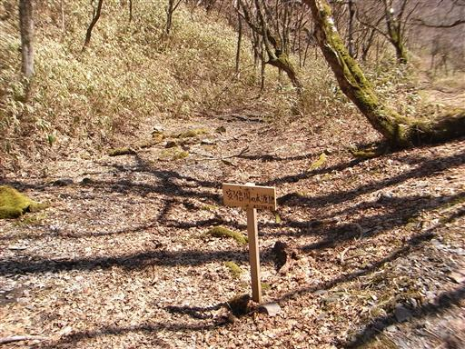
安倍峠に到着。すぐ近くに車道が通っているのが残念だが、
静かでいい雰囲気の峠だ。
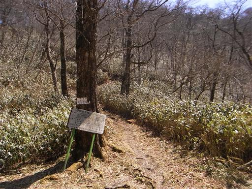
峠には一人のハイカーが休んでいた。
ここから急な尾根を登っていく。
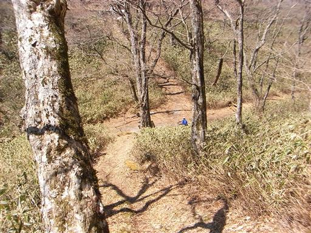
振り返ると背後に八紘嶺が見える。標高1900mを越える高峰だ。
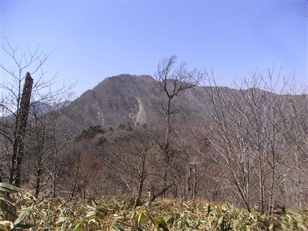
そして八紘嶺から稜線を辿った先には存在感のある七面山が聳えている。
この山は信仰の山として有名で、いつか登ってみたい山だ。
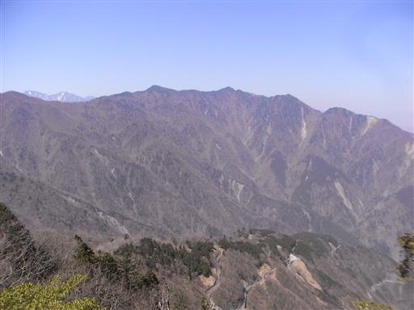
急な坂を登りきると、道はようやく尾根らしくなってくる。
ここからいよいよ安倍奥東山稜の長い長い稜線歩きの始まりだ。
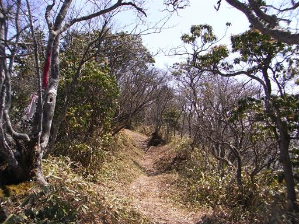
左の方向にはぽっかりと富士山が浮かんでいるのが見える。
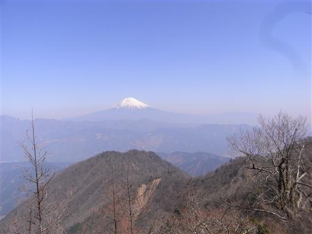
斜面が崩落している場所を通過する。
あまり崖に近づきすぎると、下が空洞になっているので危険だ。

道を塞ぐ巨大な倒木。これだけ大きな倒木はなかなか無い。
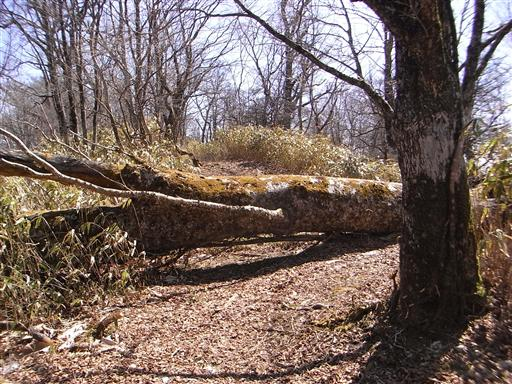
立ち枯れた木にはキノコがたくさん生えている。
雨宿りができそうなくらいの巨大なキノコだ。
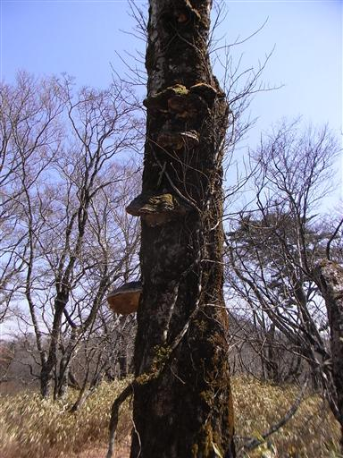
左手にこの間登った篠井山が見えてきた。
こちら側から見てもやはりよく目立つ山だ。
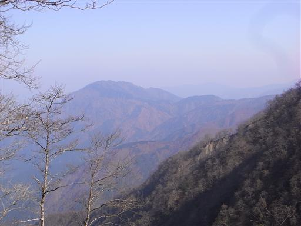
14:57 大光山山頂到着。標高1661m。
荷物が重いので、ここまで来るだけでも結構疲れてしまった。
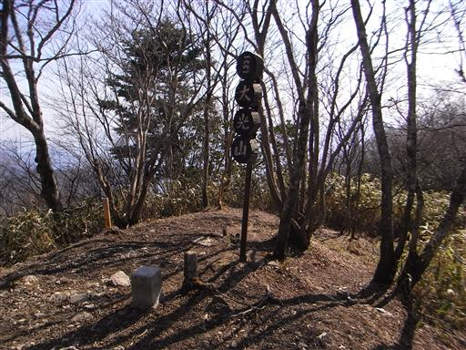
遠くに見える二つの山の手前（右）が本日の目的地である十枚山だ。
まだまだ遠い。
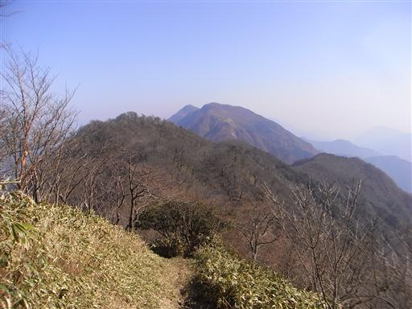
大光山から先は少し右が細くなるが、それでもよく整備された道が続く。
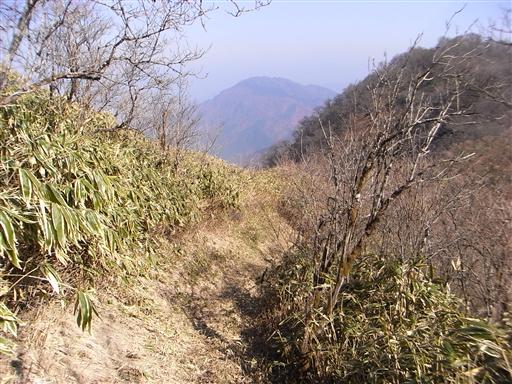
刈安峠に到着。小さな石仏が祀られている。
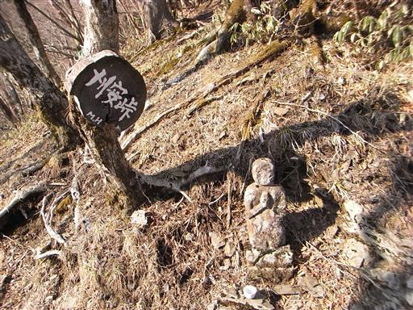
大きく崩壊した崖のすぐ側を登山道が通っている。
山伏といい大無間山といい、この界隈は本当に崩落地が多い。
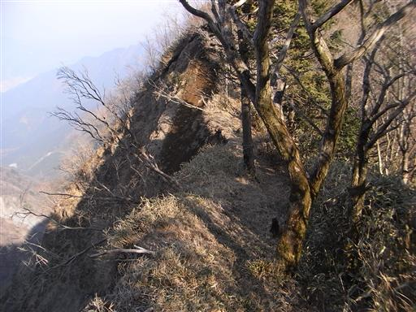
下を覗くと遥か下方までガレ場が続いている。
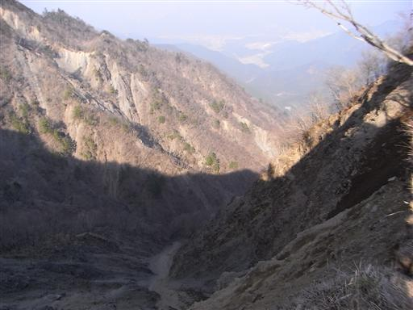
展望のよいガレ場から後ろを振り返ると、大光山が大きい。
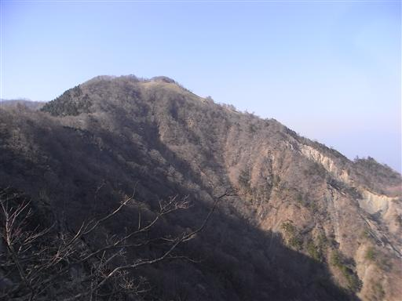
足元に赤くてきれいな虫を発見。足が8本あるのでクモだろうか？
大きさは2mm程度なのに、歩いていて気が付いたのだから相当目立つ。
せわしなく動き回るのでなかなか写真撮影が難しい。
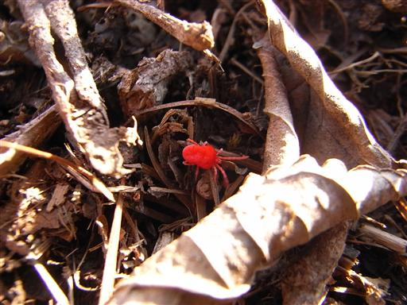
藻のようなものが垂れ下がっている。サルオガセだろうか？
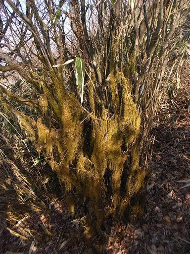
樹木が少なくなり展望が開けてくる。すぐ目の前に十枚山が見えてきた。
この辺りで大きなザックを背負った単独行の女性（おばさん）とすれ違う。
同じくテント泊のようで、今日中に梅ヶ島温泉まで行く予定だったそうだが、もう無理だろう。
青笹山付近の笹藪突破に時間がかかったらしい。明日の山行が少し心配だ。
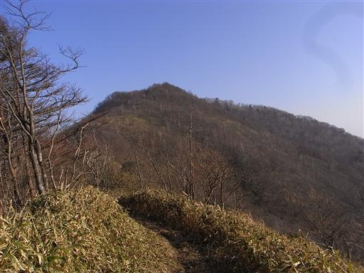
16:40 十枚山山頂到着。標高1719m。
安倍奥東山稜の主峰であり、本日の目的地だ。
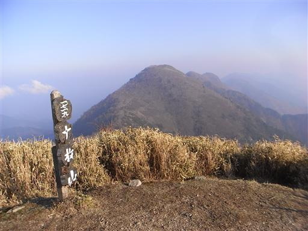
山頂はそこそこ開けている。今晩はここに一人テントを張ることにする。
大きな石が置かれているので、ここでテントを張る人はそこそこいるようだ。
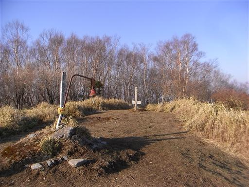
テントを張って夕食をとっていると、夕日が落ちていく。
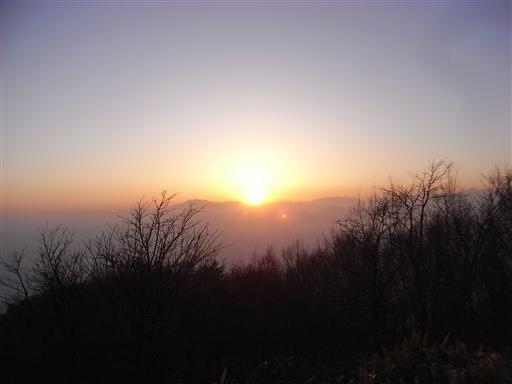
富士山は夕日を浴びて少し赤く染まっている。
十枚山は360度の展望台だと聞いていたが、東から北にかけては樹木が生い茂っている。
肝心の富士山方面と南アルプス方面はすっきり望めない。
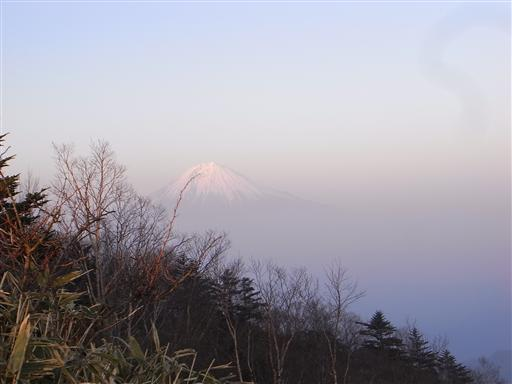
夕日が完全に落ちる。明日に備えて早めに寝る。
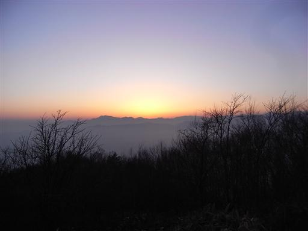